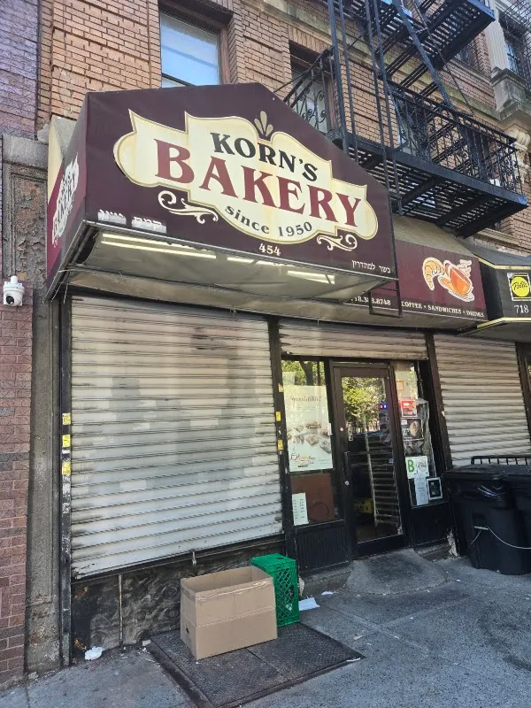
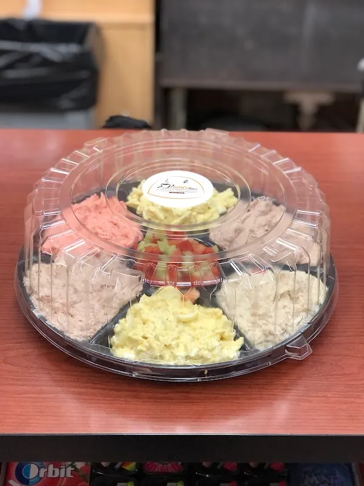

Korn’s
bakery case
A bakery in Brooklyn. Explore a sample collection for the bakery case and call Korn’s about the actual selection.
Explore the bakery case →454 Bedford Ave, Brooklyn, NY 11249

Choose a counter moment
A sample bakery collection gives each item room for its portion, ingredients and availability.
BreadsExplore the sample collection, then ask the store about the current range and availability.
Explore breads →Demo selection. Confirm products, prices and availability with the store.
The Korn’s counter
These illustrated studies show a clear menu and product detail view. Ask the bakery about its real items and allergens.



Visit Korn’s
Korn's Bakery is at 454 Bedford Ave, Brooklyn, NY 11249. Explore the business photographs, then plan a visit or call to ask about the current selection.
Plan your visit →